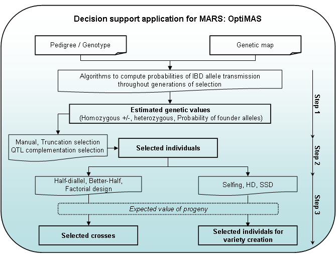

OptiMAS: a decision support tool to conduct Marker-Assisted Selection programmes
F. Valente, F. Gauthier, N. Bardol, G. Blanc, J. Joets, A. Charcosset & L. Moreau
Aims
With the increasing use of markers in breeding programmes, it is important to develop decision support tools to help breeders in implementing their Marker-Assisted Selection (MAS) project. OptiMAS has been developed with the possibility to consider a multi-allelic context, which opens new prospects to further accelerate genetic gain by assembling favorable alleles issued from diverse parents (Ribaut et al., 2010).
Principles
Algorithms have been deployed to trace parental QTL alleles identified as favorable throughout selection generations, using information given by markers located in the vicinity of the estimated QTL positions. Using these results, probabilities of allele transmission are computed in different MAS schemes and mating designs (intercrossing, selfing, backcrossing, double haploids, RIL) with the possibility of considering generations without genotypic information. Then, strategies are proposed to select the best plants and to efficiently intermate them based on the expected value of their progenies.
Functions
OptiMAS includes in a Graphical User Interface (GUI) three different modules, corresponding to the different steps of a selection programme (see Fig. 1):
- Step 1: Computation of genotypic probabilities - Estimation of genetic values
The tool provides for each candidate individual the probabilities of being homozygous or heterozygous for parental alleles at each QTL. Based on the classification of parental alleles into favorable and unfavorable categories, a molecular score (expected probability of favorable allele) is computed for each QTL. Individual molecular scores are then combined into a global genetic value by assigning identical or different weights to QTL. A colored view of the molecular score table is displayed to identify more easily QTL for which a given individual is already fixed or not. Graphs are generated to show the distribution of several indicators (QTL molecular scores at individual QTL, global genetic values…) and their evolution over the different cycles of selection. - Step 2: Selection of individuals
Different options are available to select candidates. Truncation selection can be performed based on (i) the above described genetic value, or (ii) a utility criterion which considers the probabilities of obtaining superior progenies following gametic segregation. QTL complementation selection (Hospital et al., 2000) can be performed in order to prevent the loss of favorable allele(s). Different list of selected plants can be compared via graphs showing the distribution of above mentioned indicators. All lists can be adjusted manually. A visualization tool of the pedigree of the selected plants is also provided. - Step 3: Identification of crosses to be made among selected individuals
We implemented three simple cases: (i) half-diallel between selected candidates, (ii) “better-half” strategy (Bernardo et al., 2006) which consists of avoiding crosses between selected individuals with the lowest scores or (iii) factorial design between two lists of selected plants. Constraints on the contribution of parents or on the maximum number of crosses to be done can be applied. In each case, OptiMAS computes the expected molecular score of the progeny. A graph is automatically generated showing a view of the crosses to be done.

Figure 1: OptiMAS GUI functionalities